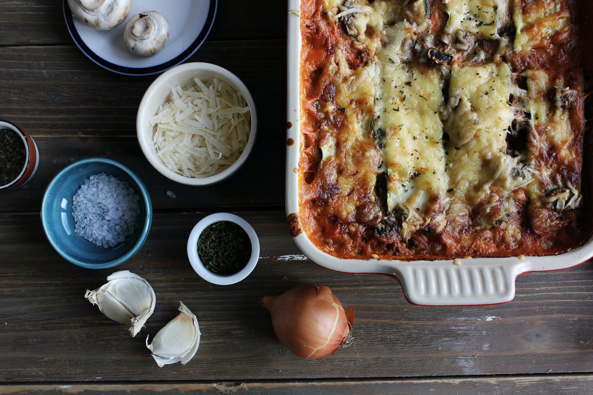

Home
Lasanga Recipe

Worlds Best Lasagna
Lasagne originated in Italy during the Middle Ages. The oldest transcribed text about lasagne appears in 1282 in the Memoriali Bolognesi ("Bolognesi Memorials"), in which lasagne was mentioned in a poem transcribed by a Bolognese notary; while the first recorded recipe was set down in the early 14th-century Liber de Coquina (The Book of Cookery)
It bore only a slight resemblance to the later traditional form of lasagne, featuring a fermented dough flattened into thin sheets (lasagne), boiled, sprinkled with cheese and spices, and then eaten with a small pointed stick.
Ingredients
- 1 lb sweet italian sausage
- 3/4 lb lean ground beef
- 1/2 cup minced onion
- 2 cloves garlin, minced
- 1 can crushed tomatoes
- 2 cans tomato paste
- 2 cans canned tomaro sauce
- 1/2 cup water
- 2 tablespoons white sugar
- Dried basil leaves
- Fennel Seeds
- Italian seasoning
- Salt, to taste
- Ground black pepper
- Fresh Parsley
- Lasagna sheets
- Ricotta
Steps
- In a Dutch oven, cook sausage, ground beef, onion, and garlic over medium heat until well browned. Stir in crushed tomatoes, tomato paste, tomato sauce, and water. Season with sugar, basil, fennel seeds, Italian seasoning, 1 teaspoon salt, pepper, and 2 tablespoons parsley. Simmer, covered, for about 1 1/2 hours, stirring occasionally.
- Bring a large pot of lightly salted water to a boil. Cook lasagna noodles in boiling water for 8 to 10 minutes. Drain noodles, and rinse with cold water. In a mixing bowl, combine ricotta cheese with egg, remaining parsley, and 1/2 teaspoon salt.
- Preheat oven to 375 degrees F (190 degrees C).
- To assemble, spread 1 1/2 cups of meat sauce in the bottom of a 9x13-inch baking dish. Arrange 6 noodles lengthwise over meat sauce. Spread with one half of the ricotta cheese mixture. Top with a third of mozzarella cheese slices. Spoon 1 1/2 cups meat sauce over mozzarella, and sprinkle with 1/4 cup Parmesan cheese. Repeat layers, and top with remaining mozzarella and Parmesan cheese. Cover with foil: to prevent sticking, either spray foil with cooking spray, or make sure the foil does not touch the cheese.
- Bake in preheated oven for 25 minutes. Remove foil, and bake an additional 25 minutes. Cool for 15 minutes before serving.
- 2 cans tomato paste
- 2 cans canned tomato sauce
- 1/2 cup water
- 2 tablespoons white sugar
Sources
Introduction text - Wikipedia
Image - Unsplash Lasagna Pic
Recipe - All recipes